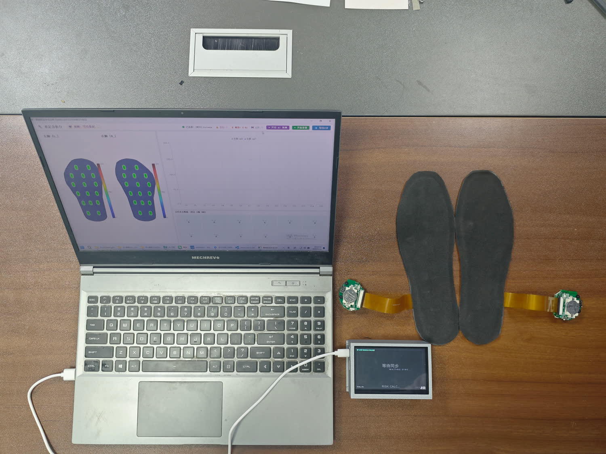
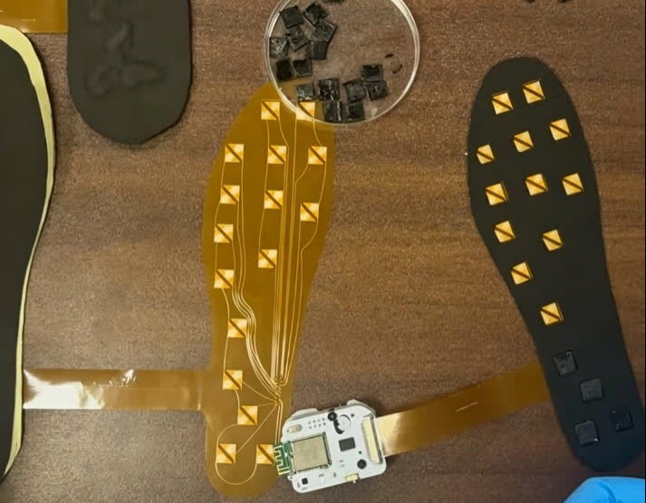
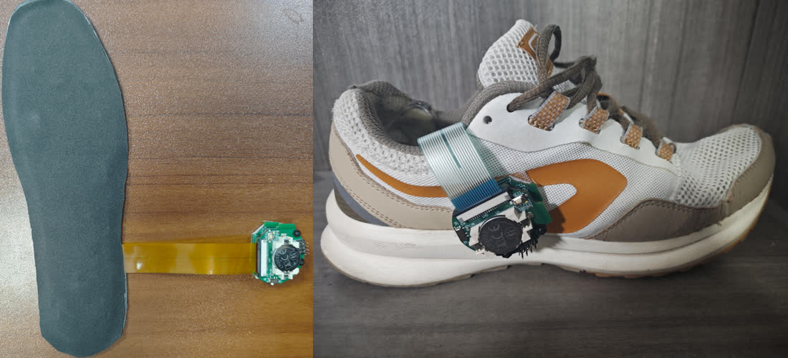
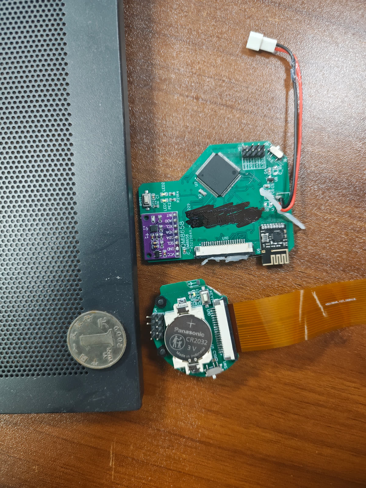
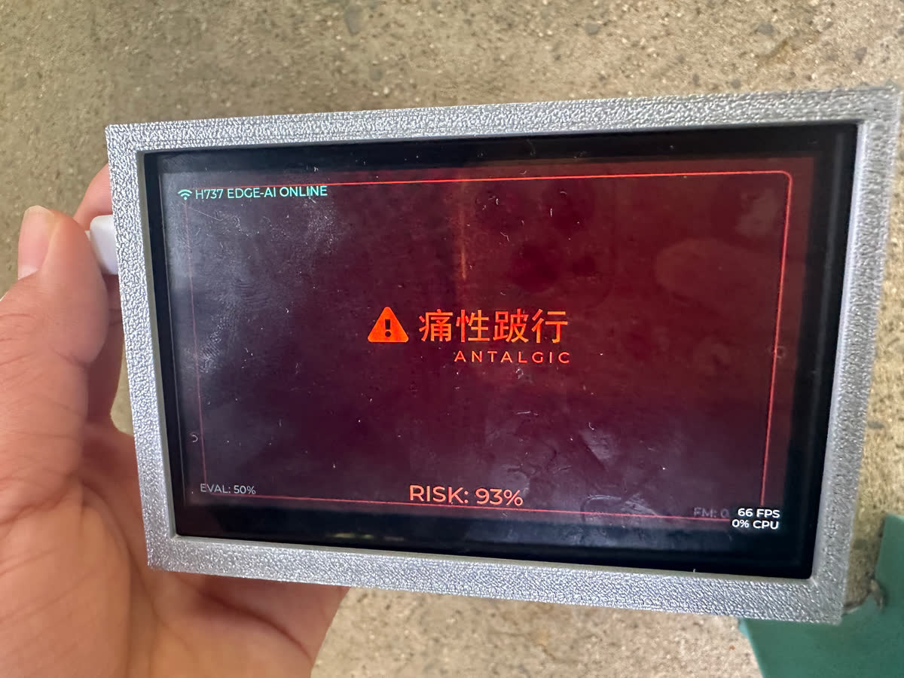
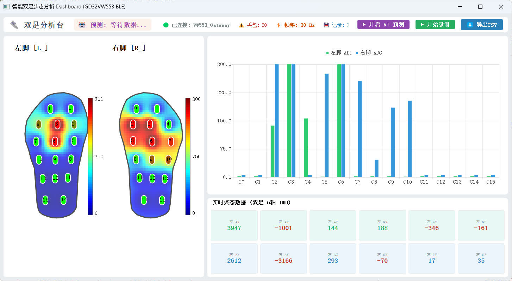

基于 GD32 的面向独居老人穿戴式防跌倒预警系统 A wearable pre-fall warning system for elderly living alone, built on GD32
探步知微，智感于芯
摘要 · ABSTRACT
独居老人监护现在的几种方案各有各的问题：智能手表的漏报误报率高，老人还常忘了戴；摄像头侵犯隐私，生活区也有死角；毫米波雷达只能在跌倒之后检测，做不到提前预警。
我们把感知层放到离地面最近的地方——一双鞋垫。每只鞋垫内嵌 16 路柔性压阻阵列和一颗 Bosch BMI270 六轴 IMU，以 80 Hz 成帧上报足底压力分布和足部姿态。数据经 BLE 5.0 汇聚，再交给一颗 Cortex-M7 在本地跑双流一维卷积网络，把连续步态实时归入 8 个类别，其中痛性跛行、偏瘫步态、盲态探步三类是公认的跌倒高危前兆。
识别结果不上云，沿原路回传到汇聚节点，一路刷本地屏，一路进入借鉴 ICU 监护仪思路的一分钟滚动风险窗，用一段时间内的持续占比压掉单帧误报。四颗 MCU 异构分工，从传感器到给出结论，全都在设备上完成。
信号链 · ARCHITECTURE
采集、传输、汇聚、推理这四件事对实时性的要求互相冲突，所以拆到了四种芯片上：鞋垫端要在纽扣电池上跑 80 Hz 的 16 通道过采样；传输端要同时挂住两条 BLE 连接；汇聚端要喂三路 1.5 Mbps 串口，还得刷一块 800×480 的屏；推理端要用 600 MHz 的 M7 吃满一个 1980 维的张量。放在一颗芯片上，任何一件事都会被另一件拖垮。

WAITING SYNC 等待同步状态。左右足的时间对齐做在 VW553 而非 F470：两条 BLE 通道各自异步覆写同一个全局快照池，40 Hz 定时打包。这是最新值锁存，没有时间戳插值也没有丢包补偿——代价是每只脚的实际到包率（约 20–26 Hz）低于名义 30 Hz 时，链路会重复上一帧。好处是全链路不排队、不用动态内存。
采集端 · INSOLE HARDWARE
柔性压阻阵列铺在鞋垫上，输出的是高阻抗、慢变化的准静态信号，最怕的就是通道间串扰和采样保持电容的残荷。CH583M 上的采集流程是逐通道做的：
// 每通道单次读取
切换通道
延时 15 µs // 给高阻抗传感器充电
丢弃一次假读 // 冲掉上一通道的残荷
连续 4 次转换求平均 // sum >> 2，4 倍过采样
加上开机粗校准值
// 整帧 16 通道 = 80 次 AD 转换16 路里没有 16 个独立 ADC 通道，是由 12 路直连 + 2 个二选一模拟开关拼出来的：CH_EXTIN_12 和 CH_EXTIN_13 各挂一个模拟开关，由单根 GPIO 选通，切换后留 50 µs 建立时间。传感阵列的供电另由一根 GPIO 控制：每帧采样前拉高，采完立刻拉低。



无线链路 · WIRELESS LINK
两只鞋垫的 GAP 设备名都是原厂默认值，扫描响应里才带 L/R 后缀，广播的服务 UUID 也相同，所以中枢认亲用的是硬编码 MAC 地址。连上后主动发起 MTU 247 交换，再手工在 GATT 表里找到 0xFFE0 / 0xFFE4 并写 CCCD 开启 Notify。
连接间隔从 SDK 默认的 7.5 ms 改到 20 ms，事件长度给到 4（2.5 ms），并且一律拒绝从机发来的连接参数更新请求：一拖二并发时，调度窗口的节拍得由中枢自己定。
#pragma pack(1) 结构体；上位机用 '<B I 16H 6h 16H 6h B' 解包，靠扫描 0xAA … 0x55 重新对齐，因为 BLE 透传会把一帧切在两个 Notification 里。70:19:88:CD:26:75 / …:72），因两足广播名与服务 UUID 相同0xAA 头 + 第 93 字节 0x55 尾，无 CRC端侧推理 · ON-DEVICE INFERENCE
44 个输入通道里，32 路是 2–526 counts 的准静态压力分布，12 轴是 ±32768 LSB 的高频加速度与角速度。量纲差两个数量级，频带也完全不同。共享第一层卷积核，网络会先学着忽略其中一路。
所以模型是双流的：两条分支各自 Conv1D(32,k3) → MaxPool → Conv1D(16,k3) → MaxPool → Flatten，到 Concatenate 才汇合，再经 Dense(64) → Dropout(0.25) → Softmax。
但在 Edge Impulse 的 Keras expert 模式里，这一步有个坑。
整体准确率 95.5%、Loss 0.22（Edge Impulse 验证集）。三类高危病理步态召回率均在 95% 以上；召回率最低的一类是正常走路（87.0%），主要被误判为偏瘫步态 6.5% 与盲态探步 4.3%。也就是说误判方向是把正常步态报成病理，而不是把病理漏掉；对预警来说，宁可错在这一边。
闭环 · CLOSED LOOP
步态识别每 0.5 秒出一个结果。每个结果都直接拿去告警的话，一次踉跄、一帧误判就能让屏幕闪红。智能手表被说「漏报误报率高」，多半就是这么来的。
系统的做法借鉴了 ICU 监护仪：不看瞬时值，看持续性。汇聚节点每转发一帧就把当前分类结果计入统计，满 1800 帧（30 Hz × 60 s）结算一次高危占比，然后清零重新滚动。占比超 30% 显示红色、超 10% 显示黄色，否则是绿色。这套颜色只用在风险占比上，类别标签本身另有一套配色。
算作高危的是三类病理步态：痛性跛行、盲态探步、偏瘫步态；上下楼另给橙色预警，楼梯本来就是跌倒高发的地方。
| 索引 | 类别 | 英文标签 | 风险分级 |
|---|---|---|---|
| 0 | 痛性跛行 | ANTALGIC | 高危 |
| 1 | 盲态探步 | BLIND PROBE | 高危 |
| 2 | 正在下楼 | DOWNSTAIRS | 预警 |
| 3 | 偏瘫步态 | HEMIPLEGIC | 高危 |
| 4 | 静止坐立 | SITTING | 安全 |
| 5 | 静止站立 | STANDING | 安全 |
| 6 | 正在上楼 | UPSTAIRS | 预警 |
| 7 | 正常走路 | WALKING | 安全 |

RISK 是一分钟滚动窗口结算出的高危占比。右下角的 FPS / CPU 是 LVGL 自带的性能监视器，显示的是界面刷新率，与推理耗时无关。上位机 · DASHBOARD
PyQt5 单文件上位机，用 qasync 把 asyncio 事件循环嫁接到 Qt 上，bleak 收 BLE、QtChart 画柱状图，全程单线程无 QThread。
足底热力图的做法：鞋垫轮廓是 47 点多边形连成的 QPainterPath，16 个测点坐标写死在参考坐标系里，左脚靠镜像翻转。插值用反距离加权（幂次 2），权重张量 (100, 60, 16) 只在窗口尺寸变化时算一次，之后每帧只做一次张量乘加，所以单线程也能跑到 60 fps。

反距离加权的权重沿传感器维归一化后，每个像素的权重和恒为 1，所以热力图显示的是 16 路的加权平均，不是叠加。于是离所有测点都远的区域（比如足弓边缘）会趋近于 16 路的算术平均值：没踩到的地方显示的也是背景色，不是零。这只是压力分布的插值示意，不是标定过的压力场。
实机演示 · DEMO
数据集由 8 类步态共 57 段录制构成，29 798 帧、约 991 秒。三类病理步态是靠物理约束模拟出来的：
上下楼各录 25 段短片段，每段约 5 秒。按行数看，8 类的样本量最大最小比为 3.03∶1，样本最少的一类是静止站立（1408 帧 / 46.9 秒）。
荣誉 · RECOGNITION
中国研究生电子设计竞赛分区赛、全国总决赛两级评审：先获华中分赛区团队一等奖，晋级全国总决赛后获团队二等奖。